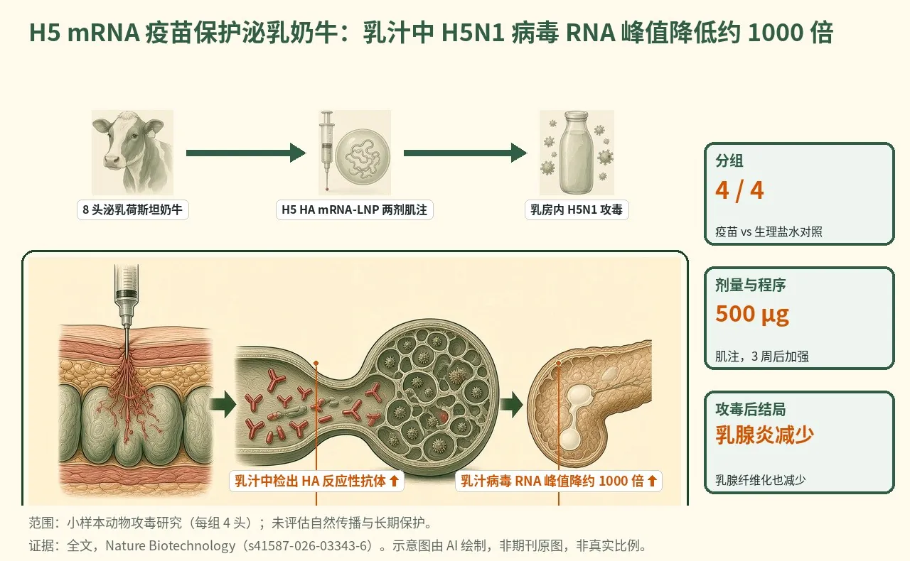

H5N1 mRNA疫苗使奶牛乳汁病毒峰值降约1000倍
研究构建编码A/dairy cattle/Texas/24-008749-002/2024血凝素（HA）的mRNA-LNP疫苗。8头泌乳奶牛中4头间隔3周两次肌注500 μg，4头注射生理盐水，第49天经乳房内攻毒。接种组乳汁病毒RNA峰值约降低1000倍，乳腺炎和乳腺纤维化减轻，产奶量下降较少；接种后乳汁中未检出疫苗mRNA。每组仅4头，传播阻断效果仍需大规模田间试验验证。

- 8头泌乳奶牛：4头疫苗、4头对照
- H5 mRNA疫苗肌注，3周后加强
- 乳房内注入H5N1病毒攻毒
- 乳汁病毒RNA峰值降约1000倍
示意图概括了研究流程：肌注两剂 H5 mRNA–LNP 疫苗诱导抗体，随后乳房内攻毒，比较接种组与对照组乳汁病毒载量和乳腺损伤。
研究背景与待解问题
2024 年，高致病性禽流感 2.3.4.4b 分支 H5N1 病毒在美国奶牛中出现，并扩散到 19 个州。与呼吸道感染不同，病毒主要在乳腺组织复制，引起乳腺炎和产奶量骤降，并被认为通过乳汁排毒在牛群间传播，也增加了病毒适应哺乳动物、传给人的风险。
已有研究显示灭活、DNA 和 mRNA 等疫苗平台能在奶牛中诱导 H5 抗体，但缺少系统的攻毒保护数据。本文要回答：mRNA–LNP 疫苗能否在泌乳奶牛中诱导保护，减少乳汁排毒和乳腺损伤。
研究设计
疫苗编码代表当前奶牛流行株的 A/dairy cattle/Texas/24-008749-002/2024 HA。8 头来自宾夕法尼亚州 HPAI 监测牛群的泌乳奶牛分为两组：4 头肌注 500 μg 疫苗并于 3 周后加强，4 头注射生理盐水。
研究在接种后多个时点检测血清与乳汁中的 H5 IgG、90% 灶减少中和抗体和血凝抑制抗体，并用假病毒深度突变扫描定位中和抗体的 HA 表位。首次接种后第 49 天，两组均经乳房内途径接种 2.3.4.4b H5N1 病毒，观察 14 天，记录乳汁病毒 RNA、反刍、产奶量、乳汁性状与加州乳腺炎试验评分，最后剖检评估乳腺肉眼与显微病变。
核心结果
安全性与免疫原性
疫苗耐受良好，接种后 8 天内乳汁中均未检出疫苗 mRNA。血清 H5 IgG 和中和抗体在接种后第 21 天即可检出，加强后显著升高；攻毒前所有接种牛的血清均能阻断病毒与红细胞结合。加强后 4 头接种牛的乳汁中均检出高水平 H5 IgG，但乳汁抗体峰值低于血清，下降也更快。
抗体靶向保守表位
深度突变扫描显示，4 头接种牛的中和抗体都集中靶向 HA 球状头部的抗原位点 A 和 B，靠近受体结合区。这些位点在当前流行的 2.3.4.4b 病毒中变异不大。
攻毒保护
对照组乳汁病毒 RNA 在攻毒后第 1 天出现、第 2 天达峰，并在整个观察期保持阳性。接种组在攻毒后第 1–3、5 和 8–13 天乳汁病毒 RNA 显著更低，峰值约降低 1000 倍。对照组中 2 头牛的未攻毒乳区也检出病毒，接种组未攻毒乳区乳汁病毒 RNA 低于检测下限。
临床体征与乳腺病变
对照组攻毒后反刍减少、产奶量从第 2 天开始显著下降，乳汁颜色和性状出现明显乳腺炎改变，接种乳区加州乳腺炎试验评分持续高于 2；接种组上述变化较轻，评分常低于 1。剖检时接种乳区肉眼病变评分对照组 95.4、接种组 8.1，胶原染色显示接种组乳腺纤维化更少。
机制解读
论文所证实的： 两剂肌注 H5 mRNA–LNP 疫苗可在泌乳奶牛中诱导血清中和抗体和乳汁 H5 IgG，主要靶向 HA 头部的保守抗原位点；在乳房内高剂量攻毒模型中，接种显著降低乳汁病毒载量、乳腺炎和乳腺纤维化，并减轻产奶量损失。
作者推测： 乳汁病毒载量下降约 1000 倍可能减少牛群间传播，但作者明确表示需要大规模田间试验验证。由于疫苗只诱导针对 HA 的抗体，检测 NP 抗体可用于区分自然感染与接种动物（DIVA 策略）。
局限与不确定
- 每组仅 4 头奶牛，样本量很小，个体差异可能影响结论。
- 乳房内直接攻毒与自然感染途径和剂量存在差异；未评估牛与牛之间的传播。
- 两头实验牛在研究前已有低水平 H5 交叉反应抗体，作者推测来自人流感病毒交叉反应。
- 抗体在乳汁中下降较快，保护持久性、单剂效果、不同接种途径与剂量仍待研究。
- 无法确认实验牛既往乳腺炎病史，接种组轻度纤维化的来源不能完全区分。
临床/产业意义
H5N1 在奶牛中的流行造成了明显经济损失，也是公共卫生关注点。本研究提供了 mRNA–LNP 疫苗在泌乳奶牛中攻毒保护的定量数据，并显示乳汁中检测不到疫苗 mRNA，这对兽用疫苗的可接受性很重要。若田间试验证实其能减少传播，mRNA 疫苗可与病毒检测项目结合，成为奶牛 H5N1 防控和降低跨物种传播风险的工具之一。